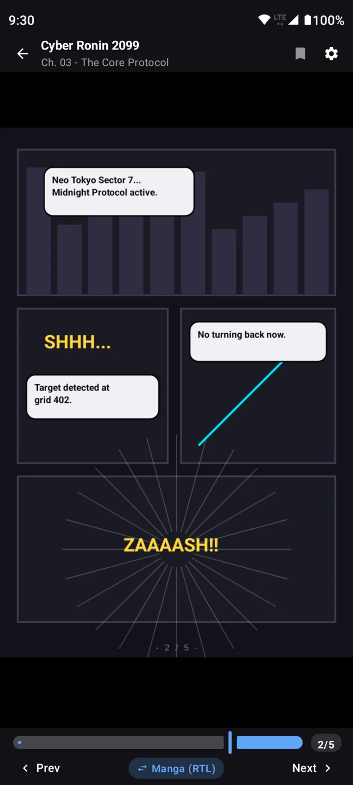
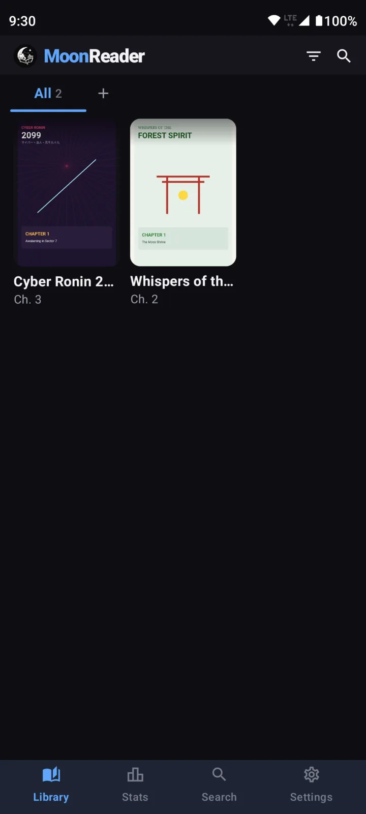
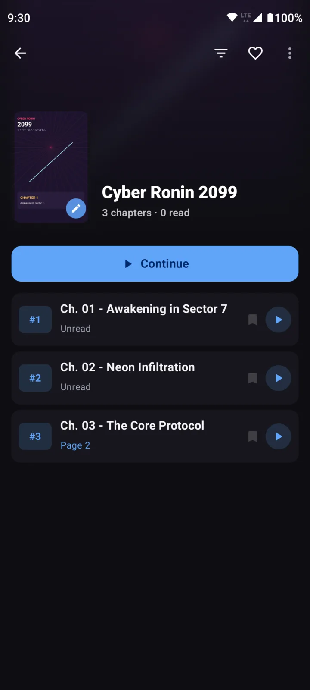
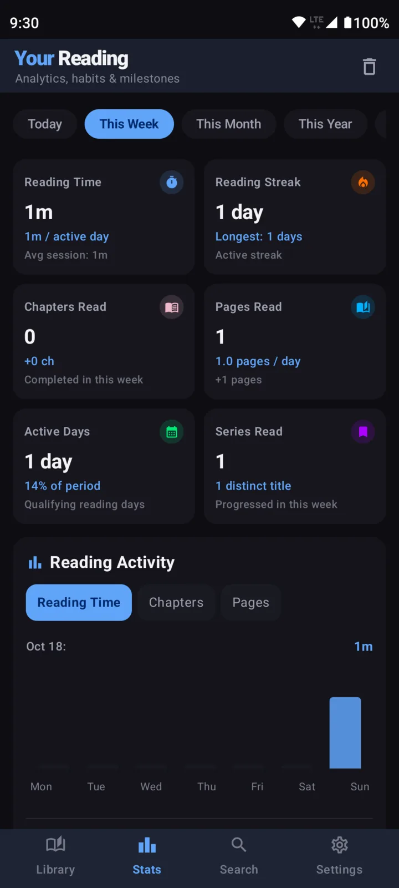
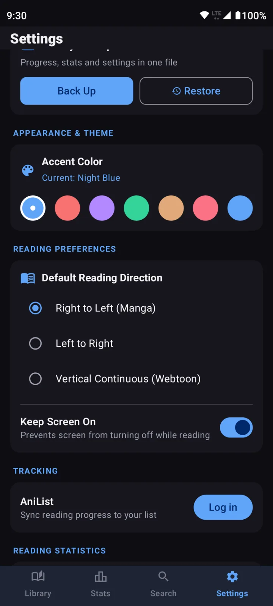

Read the manga you already have.
Moon Reader is a free Android app for your .cbz, .cbr and .7z files. Pick the folder they're in and every series shows up, ready to read, even without a connection.
Version 0.1, for Android 7.0 and newer.

No ads. No account. Nothing uploaded.
What it does
Opens your files as they are
Reads .cbz and .zip, .cbr and .rar (RAR4 and RAR5) and .7z archives. Pages come straight out of the archive, so nothing is unzipped to your storage, and the app needs no storage permissions.
Reads the way the book does
Right to left for manga, left to right for comics, or one long vertical scroll for webtoons. Pinch to zoom up to 5×, double-tap to zoom where you tap, or turn pages with the volume keys.
Remembers your page
Every chapter keeps its place. Continue takes you straight back, and a home screen widget shows the series you're partway through.
Keeps a big library tidy
Group series into collections, filter by what you're reading or have finished, search, and set your own covers. Titles and credits come from ComicInfo.xml when your files include it.
Counts your reading
Time read, streaks, chapters and pages, and personal records. The numbers stay on your phone, and you can turn them off or reset them.
Updates AniList if you want it to
Log in and link a series, and finished chapters update your AniList list. Chapters read offline are sent the next time you open the app. Skip it and the app never goes online.
Moves to a new phone with you
Back up your progress, stats, favorites, collections, covers and settings to one file, then restore it after a reinstall or on another phone.
Stays private
Lock the app with a PIN, and choose an accent color and a black, gray or light page background. There are no ads, accounts or analytics.
A look inside
These use the sample manga that comes with the app.
-

Your library, found from one folder -

Pick up where you stopped -
Right to left, page by page -

Your reading, counted -

Backups, colors and reading direction
Questions
How do I install it?
Download the APK from the latest release on your phone and open it. Android will ask you to allow installs from your browser or file manager the first time. Moon Reader isn't on the Play Store yet.
Which files can it open?
.cbz and .zip, .cbr and .rar (including RAR5), and .7z archives of images such as JPEG, PNG and WebP. You can also open a single file from your file manager with "Open with Moon Reader" without adding it to your library.
Does it work offline?
Yes, all of it. The only thing that uses the internet is AniList tracking, and only after you log in.
What data does it collect?
None. Your library, progress and stats stay on your phone. There are no ads, accounts or analytics. If you log in to AniList, the app talks to AniList to update your list, and to nothing else.
How do I move to a new phone?
In Settings, tap Back Up and save the file somewhere you can reach from the new phone. On the new phone, choose your library folder first, then tap Restore and pick the file.
Where do I get manga for it?
Moon Reader reads files you already have. It doesn't host, find or download manga, and neither does this site.
How do I report a bug or suggest something?
Open an issue on GitHub with what happened, the steps to get there, and your phone model and Android version. Pull requests are welcome too.